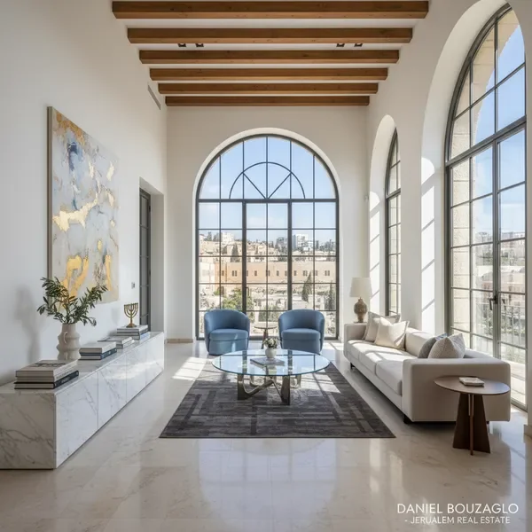

השירותים המקיפים שלנו בנדל"ן ירושלים
פתרונות נדל"ן מותאמים אישית ללקוחות פרימיום - מרכישה ועד השקעה
jerusalem apartments - דירות יוקרה בשכונות המובחרות
אנו מתמחים במציאת jerusalem apartments היוקרתיות ביותר בירושלים, בשכונות כמו רחביה, טלביה, בקעה, גרמן קולוני וממילא. עם ניסיון של למעלה מ-21 שנה בשוק הנדל"ן הירושלמי, אנו מכירים כל פינה בעיר ויודעים בדיוק איפה למצוא את הנכס המושלם עבורך.
השירות שלנו כולל ליווי מלא החל מהגדרת הצרכים והתקציב, דרך סיורים מותאמים אישית בנכסים, ועד לסיוע בהליכי הרכישה והעברת הבעלות. אנו עובדים עם מגוון רחב של נכסים - מדירות קלאסיות ומרווחות ועד לפנטהאוזים יוקרתיים עם נוף פנורמי לעיר העתיקה.
- ליווי מקצועי לאורך כל תהליך הרכישה
- גישה לנכסים בלעדיים שאינם מפורסמים בשוק
- ניתוח שוק מעמיק והערכת שווי מדויקת
- סיוע במשא ומתן ובהשגת התנאים הטובים ביותר

apartment for sale in jerusalem - מכירת נכסים יוקרתיים
אם אתם בעלי apartment for sale in jerusalem ומעוניינים למכור את הנכס במחיר הטוב ביותר ובזמן הקצר ביותר, אנחנו כאן בשבילכם. השירות שלנו כולל הערכת שווי מקצועית, צילום והפקה איכותית של הנכס, שיווק ממוקד ללקוחות פוטנציאליים מתאימים, וליווי מלא עד לחתימה על החוזה.
אנו מתמחים במכירת נכסי luxury real estate jerusalem, כולל פנטהאוזים, דירות גן, בתים פרטיים ונכסים ייחודיים אחרים. הקשרים הרחבים שלנו עם קונים פוטנציאליים מהארץ ומהתפוצות, יחד עם הניסיון הרב בשוק, מאפשרים לנו להשיג תוצאות מעולות עבור לקוחותינו.
- הערכת שווי מדויקת על בסיס ניתוח שוק מקיף
- צילום מקצועי והפקת חומרי שיווק איכותיים
- חשיפה ללקוחות פוטנציאליים איכותיים
- ניהול מו"מ מקצועי והשגת המחיר הטוב ביותר
jerusalem real estate - ייעוץ והשקעות נדל"ן
עולם jerusalem real estate מציע הזדמנויות השקעה מצוינות, אך דורש ידע מקצועי והבנה עמוקה של השוק. אנו מספקים שירותי ייעוץ מקיפים למשקיעים מהארץ ומהתפוצות, כולל ניתוח שוק, זיהוי הזדמנויות השקעה, הערכת פוטנציאל תשואה, וליווי בביצוע העסקה.
בין אם אתם משקיעים מנוסים המחפשים להרחיב את תיק הנכסים שלכם, או משקיעים חדשים המעוניינים להיכנס לשוק הנדל"ן הירושלמי, אנו נספק לכם את הכלים והידע הנדרשים לקבלת החלטות נכונות. אנו מתמחים בזיהוי נכסים עם פוטנציאל גבוה לעליית ערך, ובמציאת הזדמנויות השקעה ייחודיות בשוק luxury real estate jerusalem.
- ניתוח שוק מקיף ומעקב אחר מגמות
- זיהוי הזדמנויות השקעה עם פוטנציאל גבוה
- חישוב תשואה צפויה והערכת סיכונים
- ליווי מלא בתהליך ההשקעה
luxury real estate jerusalem - נכסי פרימיום ויוקרה
אנו מתמחים בשוק luxury real estate jerusalem, עם דגש על נכסים יוקרתיים בשווי גבוה במיוחד. הלקוחות שלנו מחפשים לא רק דירה או בית, אלא חוויית מגורים ייחודית ברמה הגבוהה ביותר. אנו מציעים גישה לנכסים בלעדיים שאינם מגיעים לשוק הרגיל, כולל פנטהאוזים עם נוף פנורמי, בתים פרטיים בשכונות היוקרה, ונכסים היסטוריים ייחודיים.
השירות שלנו ללקוחות VIP כולל דיסקרטיות מלאה, סיורים פרטיים בנכסים, ליווי אישי של דניאל בוזגלו עצמו, וטיפול מקצועי בכל הפרטים הקטנים. אנו מבינים שרכישת נכס יוקרתי היא החלטה משמעותית, ולכן אנו מקדישים את כל תשומת הלב והמקצועיות להבטחת חוויה מושלמת.
- גישה בלעדית לנכסי פרימיום
- שירות VIP עם דיסקרטיות מלאה
- ליווי אישי של דניאל בוזגלו
- טיפול מקצועי בכל שלב בתהליך
new development in jerusalem - פרויקטים חדשים ומתקדמים
ירושלים חווה תקופה של פיתוח נדל"ני אינטנסיבי, עם פרויקטים חדשים ומרשימים הצצים בכל רחבי העיר. אנו מתמחים בשיווק new development in jerusalem, כולל פרויקטים יוקרתיים כמו saidoff tower jerusalem ופרויקטים נוספים של מפתחים מובילים. הקשרים הישירים שלנו עם החברות המפתחות מאפשרים ללקוחותינו לקבל גישה מוקדמת לדירות, תנאים מועדפים, ומידע מלא על כל פרויקט.
רכישת דירה בפרויקט חדש מציעה יתרונות רבים - תכנון מודרני, טכנולוגיות חדישות, אחריות מלאה מהקבלן, ואפשרות להתאמה אישית של הדירה. אנו מלווים את הלקוחות החל משלב בחירת הפרויקט, דרך בחירת הדירה המתאימה ביותר, ועד למעקב אחר התקדמות הבנייה ומסירת המפתחות.
- גישה מוקדמת לפרויקטים חדשים
- תנאים מועדפים מהמפתחים
- ליווי בבחירת דירה ותכנון התאמות
- מעקב אחר התקדמות הבנייה
תהליך העבודה שלנו - פשוט ומקצועי
פגישת היכרות וייעוץ
נפגש לשיחה אישית כדי להבין את הצרכים, התקציב והציפיות שלך. נספק לך ייעוץ ראשוני ללא עלות.
חיפוש וסינון נכסים
נחפש עבורך את הנכסים המתאימים ביותר, כולל נכסים בלעדיים שאינם מפורסמים בשוק הפתוח.
סיורים מותאמים אישית
נארגן סיורים בנכסים שנבחרו במיוחד עבורך, עם הסברים מקצועיים על כל נכס ואזור.
ניתוח ומו"מ
נבצע ניתוח מקיף של הנכס שבחרת, נייצג אותך במו"מ ונדאג להשיג את התנאים הטובים ביותר.
ליווי עד למסירת המפתחות
נלווה אותך בכל השלבים המשפטיים והפיננסיים, עד למסירת המפתחות והכניסה לנכס החדש.
מעוניינים לשמוע עוד על השירותים שלנו?
צרו קשר עוד היום לייעוץ מקצועי ובלתי מחייב. נשמח לענות על כל שאלה ולסייע לכם למצוא את הפתרון המושלם.
צור קשר עכשיו